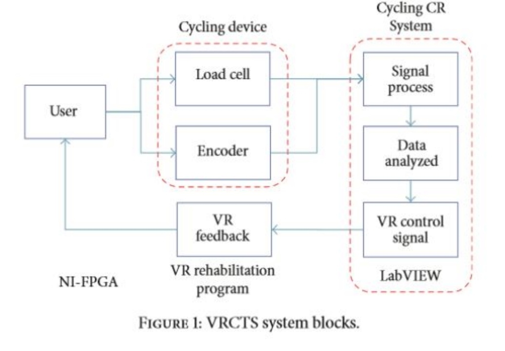
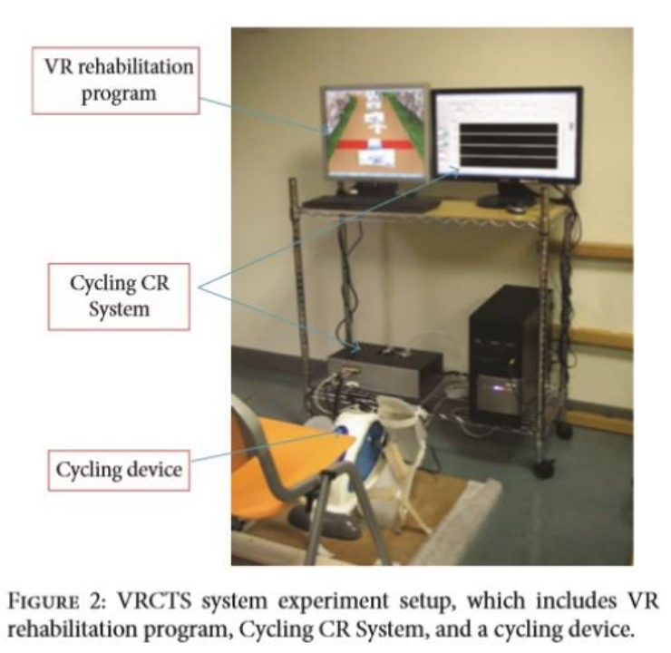
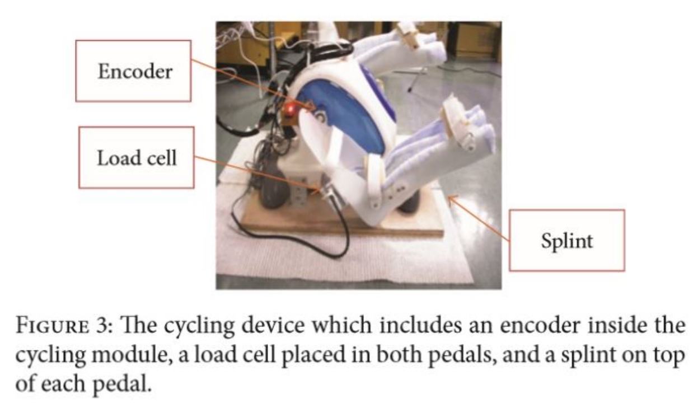
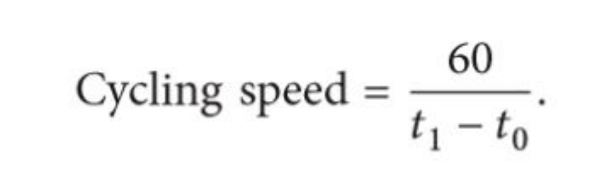
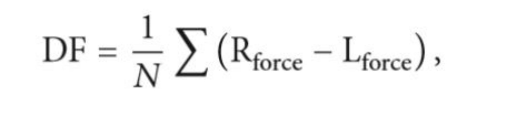

A Virtual Reality-Cycling Training System for Lower Limb Balance Improvement
A Virtual Reality-Cycling Training System for Lower Limb Balance Improvement
Reference
Journal: BioMed Research International 2016
Impact factor: 2.476
Disclaimer
This post is based on the author's personal notes from the paper and does not represent any ownership of intellectual property rights. Use the information provided here at your own risk and discretion.
Introduction
- Stroke survivors may have many complications after they survived, such as abnormal muscle tone(肌张力异常) and hemiparesis(偏瘫).
- The bilateral sides of stroke patients are often asymmetric or imbalanced, which limit their balance ability and hinder them from coordinating both sides of their bodies during movements.
- Many studies suggested that using cycling, as a rehabilitation tool, could significantly improve lower body extremity function of stroke patients.
- Limitations:
(1) Cycling requires participants to move both of their lower limbs alternately with equal force.
(2) The unaffected limb may mask the insufficiency of the affected limb and result in uncoordinated training. - VR with a proper feedback device can provide a safer and more interesting training method for the stroke patients.
- The purpose of this study is to evaluate the training effect of customizable VR-Cycling Training System (VRCTS) for use in the rehabilitation of stroke patients.
Methods
- VR-Cycling Training System (VRCTS):


(1) Cycling device with sensors- A cycling device
- Two load cells (测压头)
- An encoder

(2) Cycling Graph User Interface Control and Data Record System (Cycling CR System):
(a) Speed in rotations per minute(RPM)

(b) Difference Force(DF) between the two legs

Copyright © 2015 Powered by MWeb, Theme used GitHub CSS.